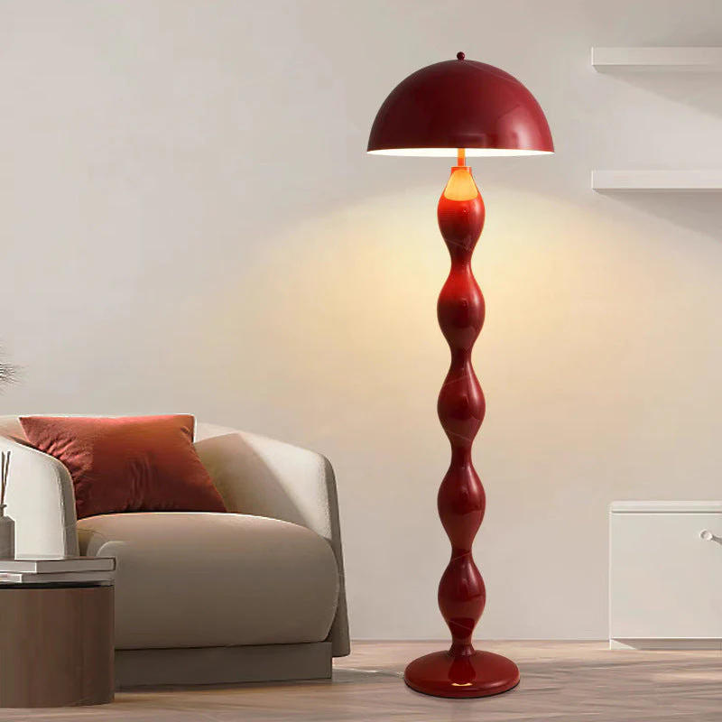
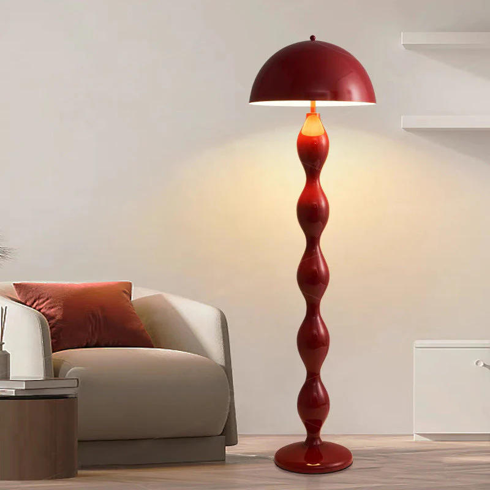

Lampadaire
Wavy Retro Floor Light
Description : Ce lampadaire "Totem" est une incarnation vibrante de l'esthétique Pop et du design italien des années 1970. Il est conçu pour apporter une verticalité rythmique à l'espace, rompant avec la linéarité stricte des luminaires traditionnels pour s'imposer comme une sculpture domestique. Sa silhouette, évoquant un chapelet de perles géantes ou une colonne vertébrale stylisée, joue sur la répétition de formes organiques pour créer une dynamique visuelle ascendante et hypnotique.
Structure : Il se distingue par un fût central spectaculaire, composé d'une succession de renflements ovoïdes superposés (évoquant le travail du verre de Murano type Vistosi ou de la céramique émaillée), surmonté d'un abat-jour en dôme demi-sphérique aux lignes épurées. La finition monochrome rouge brillant ("rouge pompier" ou "cerise") unifie l'ensemble et capture la lumière ambiante, tandis que l'intérieur blanc du dôme assure une réflexion optimale et chaleureuse vers le bas.
Dimensions : H. (Hauteur totale) : 165 cm, Diamètre (Abat-jour) : 45 cm.